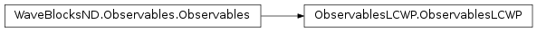
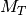
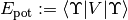
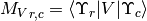
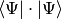

ObservablesLCWP¶
About the ObservablesLCWP class¶
The WaveBlocks Project
@author: R. Bourquin @copyright: Copyright (C) 2010, 2011, 2012, 2013, 2014, 2015, 2016 R. Bourquin @license: Modified BSD License
Inheritance diagram¶
Class documentation¶
-
class
WaveBlocksND.ObservablesLCWP[source]¶ This class implements observable computation for linear combinations
 of wavepackets
of wavepackets  . There are no assumptions made on the type of the wavepackets
in
. There are no assumptions made on the type of the wavepackets
in  .
.-
__init__()[source]¶ Initialize a new
ObservablesLCWPinstance for observable computation of linear combinations of wavepackets .
-
kinetic_energy(lincomb, *, matrix=None, component=None, summed=False, return_matrix=False)[source]¶ Compute the kinetic energy
 of a linear combination of wavepackets.
of a linear combination of wavepackets.Parameters: - linbomc – The linear combination of which we compute the kinetic energy.
- matrix (An
ndarrayorNone(default).) – The kinetic overlap matrix. IfNonethe matrix is computed internally. - component (Integer or
None.) – The index of the components
of the components  whose
kinetic energy we want to compute. If set to
whose
kinetic energy we want to compute. If set to Nonethe computation is performed for all components.
components. - return_matrix (Boolean, default is
False.) – Whether to return the kinetic overlap matrix used internally.
Returns: The kinetic energy of
and optionally the kinetic overlap matrix .- linbomc – The linear combination
-
kinetic_overlap_matrix(lincomb, *, component=None)[source]¶ Compute the kinetic overlap matrix
 .
.Parameters: - lincomb – The linear combination .
- component (Integer or
None.) – The index of the components whose
kinetic energy we want to compute. If set to Nonethe computation is performed for all components.
Returns: The matrix .
- lincomb – The linear combination
-
norm(lincomb, *, matrix=None, component=None, summed=False, return_matrix=False)[source]¶ Compute the
 norm
norm  of a linear combination of wavepackets.
of a linear combination of wavepackets.Parameters: - lincomb (A
LinearCombinationOfWavepacketssubclass instance.) – The linear combination of which we compute the norm. - matrix (An
ndarrayorNone(default).) – The overlap matrix. IfNonethe matrix is computed internally. - component – The index of the components whose norm
is calculated. The default value is
Nonewhich means to compute norms of all components. - return_matrix (Boolean, default is
False.) – Whether to return the overlap matrix used internally.
Returns: The norm of
and optionally the overlap matrix  .
.- lincomb (A
-
overlap_matrix(lincomb, *, component=None)[source]¶ Compute the overlap matrix
 .
.Note that this function is just a shortcut for calling the inner product evaluator directly.
Parameters: - lincomb – The linear combination .
- component (int or
None.) – The index of the components whose overlap
is calculated. The default value is Nonewhich means to compute overlaps of all components.
Returns: The matrix
.- lincomb – The linear combination
-
potential_energy(lincomb, potential, *, matrix=None, component=None, summed=False, return_matrix=False)[source]¶ Compute the potential energy . of a linear combination
of wavepackets.Parameters: - linbomc – The linear combination of which we compute the potential energy.
- potential – The potential
 . (Actually, not the potential object itself
but one of its
. (Actually, not the potential object itself
but one of its V.evaluate_*methods.) - matrix (An
ndarrayorNoneper default.) – The potential overlap matrix. IfNonethe matrix is computed internally. - component (Integer or
None.) – The index of the components whose
potential energy we want to compute. If set to Nonethe computation is performed for all components. - return_matrix (Boolean, default is
False.) – Whether to return the potential overlap matrix used internally.
Returns: The potential energy of
and optionally the potential overlap matrix  .
.- linbomc – The linear combination
-
potential_overlap_matrix(lincomb, potential, *, component=None)[source]¶ Compute the potential overlap matrix .
Parameters: - lincomb – The linear combination .
- potential – The potential . (Actually, not the potential object itself
but one of its
V.evaluate_*methods.) - component (Integer or
None.) – The index of the components whose
potential energy we want to compute. If set to Nonethe computation is performed for all components.
Returns: The matrix
.- lincomb – The linear combination
-
set_gradient(gradient)[source]¶ Set the gradient.
Parameters: gradient (A Gradientsubclass instance.) – A gradient operator.
-
set_innerproduct(innerproduct)[source]¶ Set the innerproduct.
Parameters: innerproduct (A InnerProductsubclass instance.) – An inner product for computing the integrals. The inner product is used for the computation of brakets .Note
Make sure to use an inhomogeneous inner product here.
-